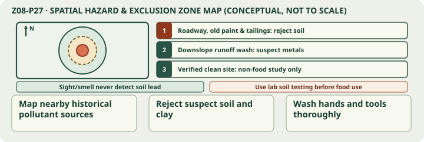

Z08-P27 · Rocks, minerals and materials · New manuscript
Soil Contamination, Lead and Tailings Exclusion Screening
Exclude contaminated urban, roadside, and mining-impacted soils and clays from handling, shelter daubing, and food-related uses.
When it applies · Sites near pre-1978 structures, highways, railways, orchards, landfills, or northern mine tailings.
Equipment · Site history notes, gloves, soap and clean water.

Actions
- Recognize that soils near pre-1978 painted structures, busy roads, railways, smelters, and mine tailings frequently contain elevated lead or arsenic.[R12, R14]
- Accept that sight, smell, and texture cannot detect dissolved metals, petroleum residues, pesticides, or industrial contaminants in clay or soil.[R12]
- Keep unverified wild soil and clay strictly out of cookware, water vessels, food pits, and bare-hand contact; wash hands after soil fieldwork.[R12, R14]
Failure recognition · Assuming rural or riverbank clay is chemically pure exposes users to lead, arsenic, or upstream agricultural and industrial runoff.[R12, R14]
Verify · Historical pollutant screening excludes suspect corridors and keeps wild soil separate from food and drinking water.[R12]
Stop or change course · Stop soil handling immediately if oily sheen, chemical odor, slag, paint chips, or tailings proximity appear.[R12, R14]
Evidence and editorial notes
- R12 · U.S. EPA · Protect Your Family from Lead in Soil and Dust (2025)
- Section: Soil contamination and urban/industrial lead hazards · Conditions: Soils near historic structures, roadways, mines, or industrial sites
Support: Soils and clays near older painted structures, smelters, tailings, or roadways may harbor lead or industrial contaminants.
Limitations: Visual texture or color cannot detect lead, arsenic, or chemical contaminants; do not use unverified soil/clay for cookware or food contact. · Conflicting evidence: None noted.
Editorial note: Separates clay plasticity checks from chemical safety. · Specialist reviewer: Environmental health and soil scientist
Primary source · checked 2026-11-25 - R14 · USGS · National Minerals Information Center and Mineral Commodities (Current web edition)
- Section: Metallic ores, sulfides, and heavy-metal mineral toxicity · Conditions: Unidentified metallic-luster minerals, tailings, or bright oxidized crusts
Support: Sulfide ores and metallic minerals can contain lead, arsenic, mercury, or copper compounds hazardous via dust or hand-to-mouth transfer.
Limitations: Do not taste, lick, burn, or process unidentified metallic or brightly crusted minerals; wash hands after handling. · Conflicting evidence: None noted.
Editorial note: Blocks hazardous mineral extraction/handling. · Specialist reviewer: Geochemist and toxicologist
Primary source · checked 2026-11-25
Source lineage · New manuscript (Z08 P16 contamination hazards) · Classification · New manuscript.